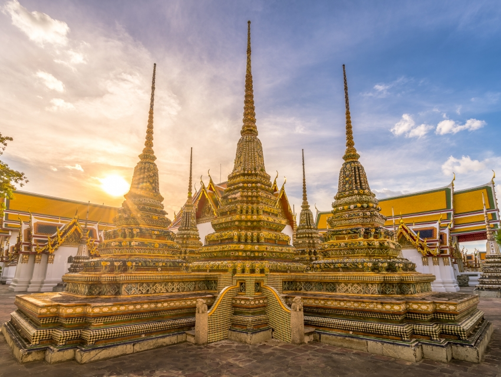

THAILANDA
THAILANDA
Templul Wat Pho (Templul lui Buddha culcat) este situat in spatele Templului lui Budha de Smarald, fiind cel mai mare templu din Bangkok si se numeste astfel, datorita statuii gigantica ce il reprezinta pe Budha Culcat, suflata cu aur, de 15 metri inaltime si de 46 metri lungine. Wat Pho este, printre thailandezi, cunoscut și ca „prima universitate publică a națiunii”, datorită celor 1.360 de inscriptii despre științe medicale, istorice și liberale, regasite in templu, unde oamenii pot citi și învăța oricând. Inscripțiile din marmură despre științe medicale, anatomie și ortopedie sunt originile principiilor masajului tradițional Wat Pho Thai.